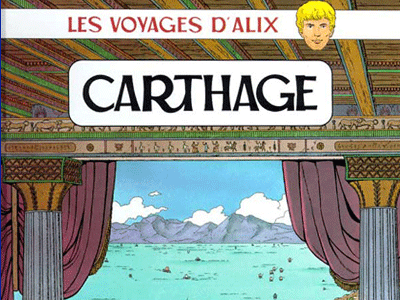
Voyages d'Alix - Carthage
BD / Voyages d'Alix
Directeur de série: Jacques Martin / Catégorie: BD historique et didactique / 56 pages / Casterman éditions
Textes-Dessins-Couleurs: Vincent Henin
Si Carthage a été détruite par les Romains à la fin des guerres puniques, pour être reconstruite plus tard en colonie romaine, elle est en tous cas
entièrement reconstituée dans son architecture et histoire tout au long de ce livre. Laissez Alix vous guider...
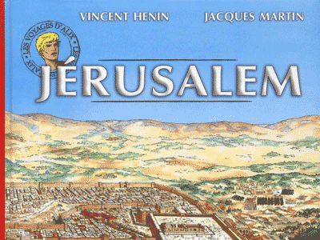
Voyages d'Alix - Jérusalem
BD / Voyages d'Alix
Directeur de série: Jacques Martin / Catégorie: BD historique et didactique / 56 pages / Casterman éditions
Textes-Dessins-Couleurs: Vincent Henin
La ville de la paix, toujours vibrante et actuelle, se dévoile au long du périple d'Alix et Enak. De sa fondation directement liée au peuple juif
jusqu'à son annexion à l'Empire Romain. Découvrez son Histoire, son architecture et ses grands rois... En fin d'ouvrage, les sites importants à visiter si vous vous rendez en Israël.
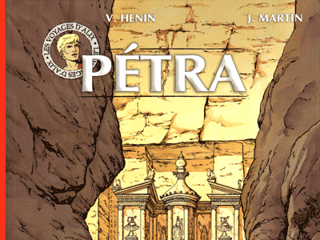
Voyages d'Alix - Pétra
BD / Voyages d'Alix
Directeur de série: Jacques Martin / Catégorie: BD historique et didactique / 56 pages / Casterman éditions
Textes-Dessins-Couleurs: Vincent Henin
Pétra, la ville taillée à même la pierre, n'aura plus de secrets pour vous. Découvrez avec Alix, la ville fondée par les Nabatéens, véritables génies de l'architecture et du commerce.
En plus, profitez du supplément sur Palmyre et Baalbek.
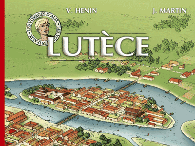
Voyages d'Alix - Lutèce
BD / Voyages d'Alix
Directeur de série: Jacques Martin / Catégorie: BD historique et didactique / 56 pages / Casterman éditions
Textes-Dessins: Vincent Henin / Couleurs: Vincenzo d'Aprile
Découvrez Paris à l'époque gauloise et gallo-romaine avec Alix et Enak. Voyez Lutèce, ville lumière de l'Antiquité, comme vous ne l'avez jamais vue!
En prime, adresses utiles et complément de visite à la fin de la BD.
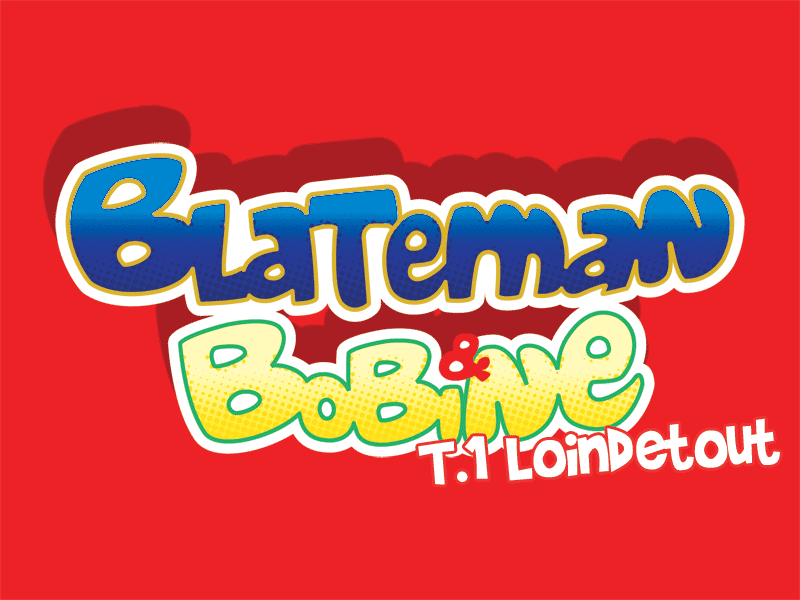
Blateman & Bobine (#1) - Loindetout
BD / Blateman & Bobine
Scénario: Tarek / Catégorie: BD Jeunesse / 46 pages
Dessins-Couleurs: Vhenin (Vincent Henin)
Blateman est à l'aventure ce que Batman est à la chauve-souris... Euh, comprenez ce que vous y comprenez... Il est musclé, sympa mais tellement maladroit.
Heureusement que Bobine, son assistant est là pour l'empêcher de devenir un super-zéro à la place d'un super-héros!
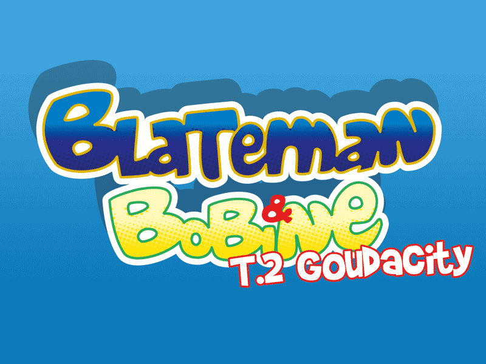
Blateman & Bobine (#2) - Goudacity
BD / Blateman & Bobine
Scénario: Tarek / Catégorie: BD Jeunesse / 46 pages
Dessins-Couleurs: Vhenin (Vincent Henin)
Blateman est à l'aventure ce que Batman est à la chauve-souris... Euh, comprenez ce que vous y comprenez... Il est musclé, sympa mais tellement maladroit.
Heureusement que Bobine, son assistant est là pour l'empêcher de devenir un super-zéro à la place d'un super-héros!
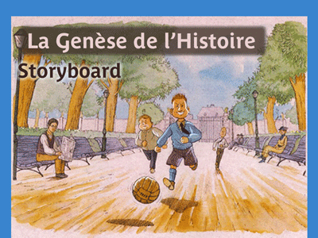
La Genèse de L'Histoire
Storyboard / Illustration
Adaptation d'une nouvelle de Dino Buzatti "Il bambino" dans "Le K".
Avez-déjà imagine Hitler petit enfant jouant dans un parc?
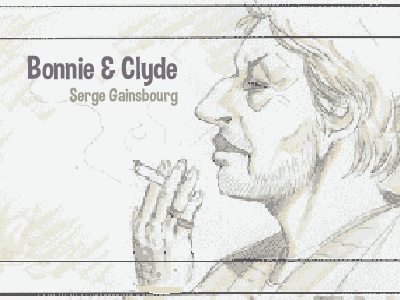
Bonnie & Clyde
Storyboard / Illustration
Adaptation de la chanson de Serge Gainsbourg en video clip.
Les deux amants terribles et éternels sur une chanson de Gainsbourg... Un classique!
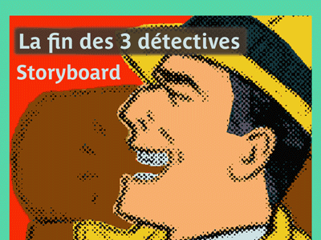
La fin des trois détectives
Storyboard / Illustration
Sherlock Holmes et Watson, Maigret, Hercule Poirot mystérieusement réunis dans un compartiment de train...
Qui est derrière tout ça?..
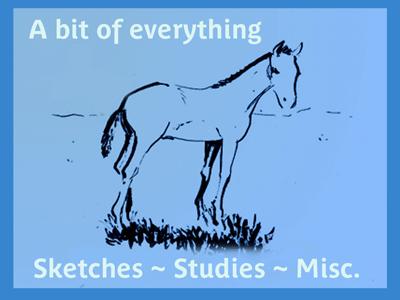
Boîte à Dessins (divers)
Illustration
Croquis, études et dessins oubliés... mais pas pour tout le monde. Un peu de tout, en fait. Une belle démonstration de mes différentes facettes d'illustrateur/dessinateur.
Illustrations de nouvelle, pour livres, croquis.
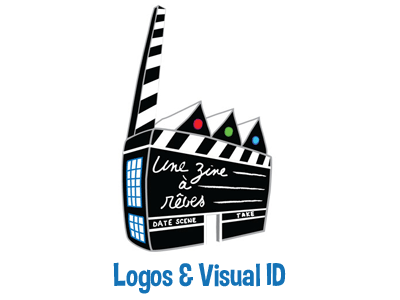
Logos - Visual ID - Posters - Brochures
Graphisme
Partenaires: Commission Européenne, Apis Consulting, Une Zine à Rêves, Une Chaise sur le toit, Miss V. Hats, Champagne Tissier et Fils, Conseil de la Jeunesse de la Communauté Française de Belgique, Cara et associés, MushRoom Retrogaming, Pianofabriek ...
Contactez-moi si vous avez une idée à développer. Je suis toujours partant!
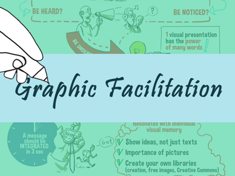
Facilitation Graphique - Storytelling - Visual Map
Graphisme / Facilitation Graphique
Un accompagnment graphique et visuel comme aide à la discussion, debriefing et la construction mental et technique d'un projet en équipe.
Il peut s'agir aussi des minutes d'une réunion ou d'un rapport... dessiné ou représenté graphiquement pour une meilleure compréhension et mémorisation.
Contacte-moi si tu as un évènement à couvrir. Je suis toujours partant!
Corporate Webdesign & Webmastering
Web / Graphisme
Réalisation et maintenance de designs adaptables ("responsive") et corporate: lisibles sur tout type de support → Desktop, Tablet, Phone.
Technologies/Frameworks: Balsamiq Mockup, Figma, Adobe XD, HTML5, CSS3, SASS-SCSS, CSS grid, Bootstrap, Atlassian Confluence
Private Webdesign
Web / Graphisme
Création de designs adaptables ("responsive") pour clients privés: lisibles sur tout type de support → Desktop, Tablet, Phone.
Technologies/Frameworks: Balsamiq Mockup, Figma, Adobe XD, HTML5, CSS3, SASS-SCSS, CSS grid, Bootstrap